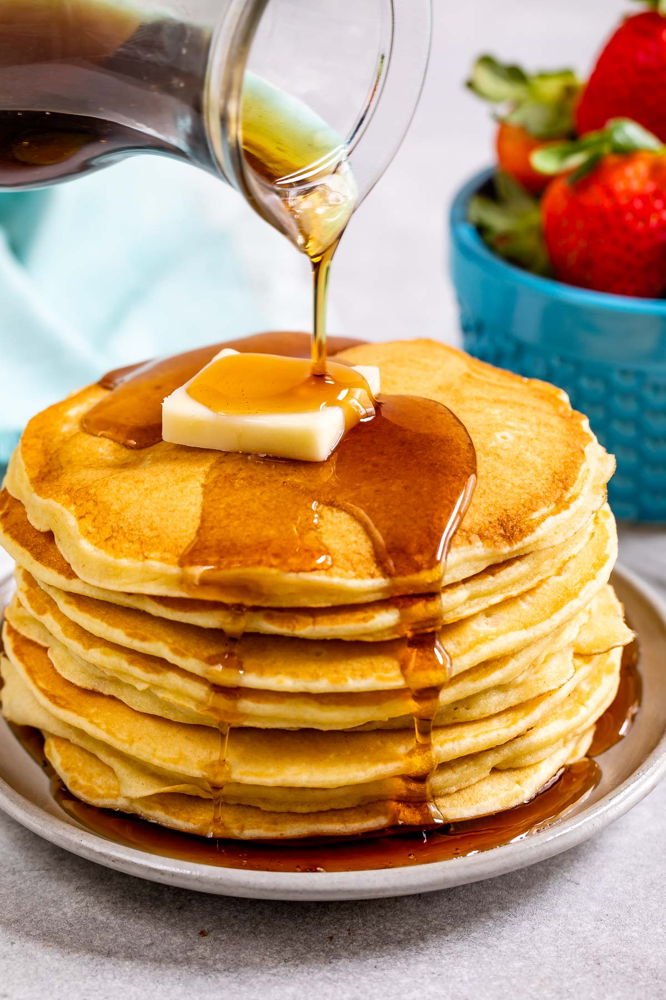

Pancakes
Pancakes

Fluffy Pancake Recipe
Ingredients
2 cups whole milk
1/4 cup white vinegar
2 1/2 cups flour
3/4 cup sugar
2 teaspoons baking power
1 teaspoon baking soda
1 teaspoon salt
3 large eggs
1 teaspoon vanilla extract
1 tablespoon butter, softened
toppings of choice
Steps
Prehead girddle to 300
Stir milk and vinegar together
Whisk flour, sugar, baking power, baking soda, and salt in second bowl
beat egs in bowl til smooth. Add vanilla/milk mixture and whisk together. Add flour mixture and whisk.
Melt butter on griddle. Spoon batter onto griddle. Cook until bubbles.
Flip pancakes and cook til browned on side. Serve.